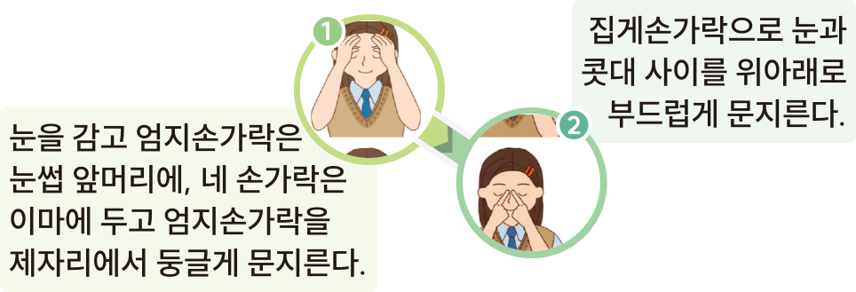
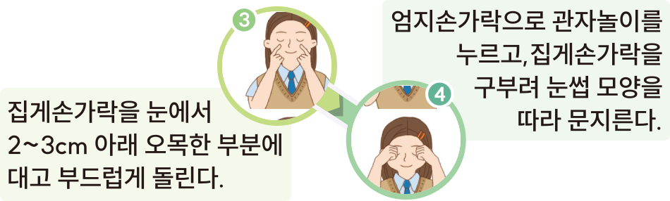
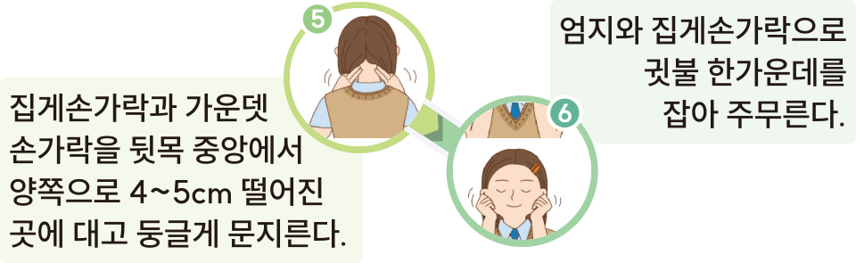

체험
활동
중국의 눈 보호 체조를 따라 해 봅시다.
영상 보기
참고



닫기
참고
눈 보호 체조
눈을 보호하는 건강 체조인
眼保健操
(
yânbâo jiàncão)
는
중국의 초등학교를 중심으로 많은 학교에서 정식 교육 활동
으로 실시하고 있는 눈 건강 체조이다.
보통 오전 수업 중간(통상 3교시 후)에 따로 5분 가량 시간을
아예 따로 시간표에 편성해 두고 실시한다. 눈 주위 혈자리를
자극하여 눈과 얼굴의 혈액순환을 촉진하고 피로를 풀기 위한
목적이 있다.